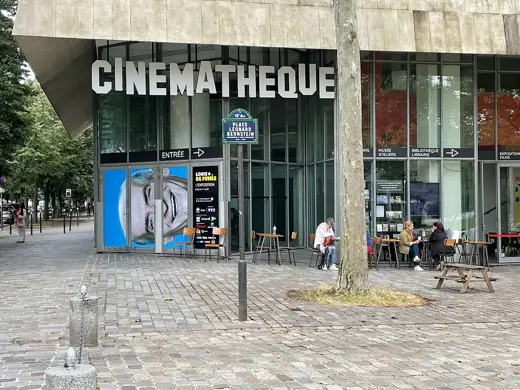
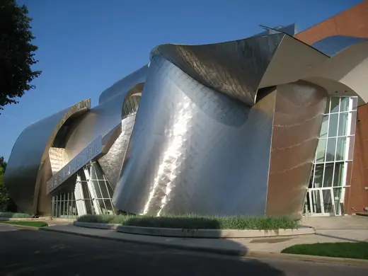
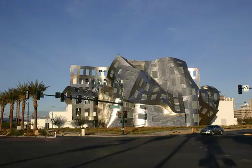

Frank Gehry buildings 30
Sort
 Concord Pavilion1975 · Concord
Concord Pavilion1975 · Concord Binoculars Building1991 · Los Angeles
Binoculars Building1991 · Los Angeles
Cinémathèque française (former American Center)1994 · Paris Dancing House1996 · Prague
Dancing House1996 · Prague Neuer Zollhof1998 · Düsseldorf
Neuer Zollhof1998 · Düsseldorf DZ Bank Building2001 · Berlin
DZ Bank Building2001 · Berlin
Peter B. Lewis Building (Weatherhead School of Management)2002 · Cleveland Walt Disney Concert Hall2003 · Los Angeles
Walt Disney Concert Hall2003 · Los Angeles Jay Pritzker Pavilion2004 · Chicago
Jay Pritzker Pavilion2004 · Chicago MARTa Herford2005 · Herford
MARTa Herford2005 · Herford IAC Building2007 · New York
IAC Building2007 · New York
Cleveland Clinic Lou Ruvo Center for Brain Health2010 · Las Vegas New World Center2011 · Miami Beach
New World Center2011 · Miami Beach Opus Hong Kong2012 · Hong Kong
Opus Hong Kong2012 · Hong Kong Fondation Louis Vuitton2014 · Paris
Fondation Louis Vuitton2014 · Paris LUMA Arles Tower2021 · Arles
LUMA Arles Tower2021 · Arles Gehry Residence1978 · Santa Monica
Gehry Residence1978 · Santa Monica Vitra Design Museum1989 · Weil am Rhein
Vitra Design Museum1989 · Weil am Rhein Weisman Art Museum1993 · Minneapolis
Weisman Art Museum1993 · Minneapolis Guggenheim Bilbao1997 · Bilbao
Guggenheim Bilbao1997 · Bilbao Museum of Pop Culture2000 · Seattle
Museum of Pop Culture2000 · Seattle Gehry Tower2001 · Hanover
Gehry Tower2001 · Hanover Fisher Center for the Performing Arts2003 · Annandale-on-Hudson
Fisher Center for the Performing Arts2003 · Annandale-on-Hudson Ray and Maria Stata Center (MIT Building 32)2004 · Cambridge
Ray and Maria Stata Center (MIT Building 32)2004 · Cambridge Hotel Marqués de Riscal2006 · Elciego
Hotel Marqués de Riscal2006 · Elciego Art Gallery of Ontario2008 · Toronto
Art Gallery of Ontario2008 · Toronto 8 Spruce Street2011 · New York
8 Spruce Street2011 · New York Biomuseo2014 · Panama City
Biomuseo2014 · Panama City Dr Chau Chak Wing Building2015 · Sydney
Dr Chau Chak Wing Building2015 · Sydney